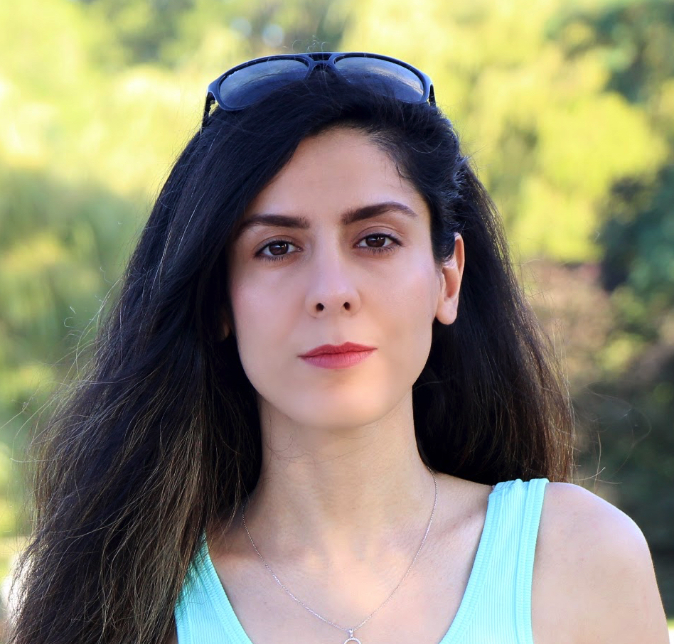

email: z dot lastname at gmail dot com
I am an Applied Scientist at Amazon. I completed my PhD in Computer Science at UBC under the supervision of Dr Rachel Pottinger. My PhD Thesis focused on helping users in three phases of the data science process: data exploration, query writing, and query answer analysis. A summary is included in these slides.
E.Y.Lai, Z. Zolaktaf, M.Milani, O.AlOmeir, J.Cao, R.Pottinger, "Workload-Aware Query Recommendation Using Deep Learning", EDBT, 2023.pdf
Z. Zolaktaf, M.Milani, R.Pottinger, "Facilitating SQL query composition and analysis", SIGMOD, 2020.pdf
J.Liu, Z. Zolaktaf, M.Milani, R.Pottinger, "Improvement of SQL Recommendation in Scientific Databases", SSDBM, 2019.pdf
Z. Zolaktaf, O.AlOmeir, R.Pottinger, "Bridging the Gap Between User-centric and Offline Evaluation of Personalized Recommendation Systems", In UMAP’18 Adjunct: 26th Conference on User Modeling, Adaptation and Personalization Adjunct, ACM, 2018. pdf
Z. Zolaktaf, R.Babanezhad, R.Pottinger, "A Generic Top-N Recommendation Framework For Trading-off Accuracy, Novelty, and Coverage", 34th IEEE International Conference on Data Engineering (ICDE), 2018. pdf slides
Z. Zolaktaf, "Facilitating User Interaction With Data", Proceedings of the VLDB 2017 PhD Workshop (PhD@VLDB), 2017.
Z. Zolaktaf, J. Xu, R. Pottinger, "Extracting Aggregate Answer Statistics for Integration", 18th International Conference on Extending Database Technology (EDBT), 2015. pdf slides
F. Riahi, Z. Zolaktaf, M. Shafiei, E. Milios, "Finding Expert Users in Community Question Answering", In Proceedings of the 21st International Conference on World Wide Web (WWW). ACM, 2012. pdf
Z. Zolaktaf, F. Riahi, M. Shafiei, E. Milios, "Modeling Community Question Answering Archives". Workshop on Computational Social Science and the Wisdom of Crowds, Neural Information Processing Systems (NIPS), 2011. pdf poster
Z. Zolaktaf, R.Babanezhad, R.Pottinger, "Personalized Top-N Recommendation For Promoting Long-tail Items", WIML@NIPS, 2017.
Z. Zolaktaf and R.Pottinger, "Facilitating Data Exploration, Query Composition, and Query Answer Analysis", Northwest Database Society (NWDS), 2018.
Here is a link to my dad's website
© 2023 Zainab Zolaktaf | Powered by Markdown